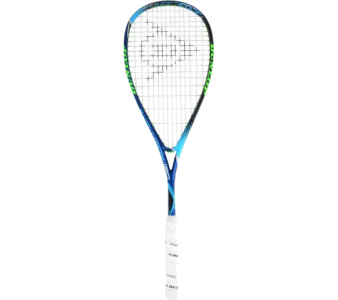

Dunlop Hyperfibre+ Evolution Pro

Price: 15.45 USD
Краткое описание
The Hyperfibre + Evolution Pro is the most advanced squash racket from Dunlop. The most innovative techniques have been used to develop this racket.
Характеристики
- Construction Premium Graphite & Hyperfibre +
- Weight Frame: 120g
- Blade size: 490 cm2
- Blade shape: Hybrid
- Balance: Extra Head Light
- String pattern: 14×18
- Player: Nick Matthew
- Color: SKU773252
Технические характеристики
| Type |
Color |
Size |
| black |
white |
10' |
12' |
| super |
5g |
6g |
7mm |
8mm |
| super+ |
9g |
10g |
11mm |
12mm |
Подробное описание
The Hyperfibre + Evolution Pro is the most advanced squash racket from Dunlop. The most innovative techniques have been used to develop this racket.
Benefits:
- Hyperfibre + for more stability, control and power
- Aeroprofile cuts sharper through the air
- Parallel string increased blade for more control and power
- Aeroskin ultra fast air flow
- Glide polymer reduces friction, increases strength and durability
- Hybrid Cross section increases power and stability
- Tapered Shaft increases the resilience and rigidity of the racket
- This racket is the choice of Squash professional Nick Mathem!
Похожие товары:
Dunlop Hyperfibre+ Evolution Pro
Victor IP 10 Squashracket